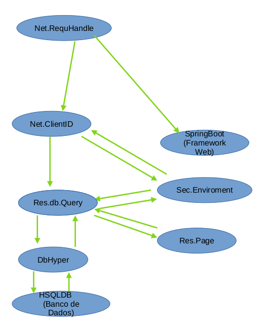

A estrutura do projeto
Primeiro o projeto como todo sistema de software é um projeto o qual é quebrado em niveis de abstração(camadas)
Como por exemplo um sistema operacional como Linux, vem primeiro o Kernel com os Drivers, os quais fazem operações de baixo nivel.
E em seguida as aplicações de gerenciamento de usuários e grupos como systemd. E em seguida as aplicações como browsers, editores de texto
aplicações diretamente utilizadas pelo usuário.
Antes de tudo vale explicar que como medida de controle existe um sistema virtual de usuários, arquivos, serviços, pacotes e diretórios
Ou seja assim um administrador podera controlar o que os funcionarios estão digitando para o cliente o que eles estão mandando como
arquivos. Isso pois o servidor vai ser um Middle Man entre serviços como WhatsApp e os funcionarios. E para isso cada funcionario vai ser um
usuário o qual vai ter os proprios arquivos, serviços, pacotes e diretórios.Onde um arquivo é por exemplo um bloco de texto , serviço é um
script ou pequeno programa o qual não precisa mais póde ser escrito pelo usuário. Diretórios(pastas) guardam arquivos e Pacotes arquivos que pódem
ser modificados por Serviços.
Um serviço padrão que vai vir com todos os usuários é o Indexer o qual vai ler conversas de whatsapp e gerenciar a importância delas
para passar ou não para um funcionario, ou quando passar para um funcionario redigir um texto simples explicando a situação e baseado no banco
de dados do servidor melhores maneiras de trabalhar isso.
O funcionamento e o desenvolvimento do Indexer vão ser especificados após o servidor base estar pronto.
No nosso caso por enquanto temos as seguintes classes(Classes no Java representam items no mundo real, ou seja peças que
montam o projeto).

net.RequHandle.
Vai efetuar o handeling de request e passar para a aplicação atuando como a porta de entrada
para o servidor
net.ClientID.
Vai efetuar autententicação de usuários. Permitindo um usuário acessar arquivos e serviços
Nota que um usuário administrador ele vai ter a variavel Acc colocada como "root.* && root.*/"
o que significa que
ele vai ter acesso os arquivos e serviços de todos outros no sistema. Esses usuários rodam em threads(mini processos da aplicação)
que foram registradas no objeto da classe sec.Enviroment.
SpringBoot(Framework Web).
O framework utilizado para handeling de requests web e para criação dos Java Beans.
res.db.Query
A classe Query vai ser contatada pela classe ClientID, Query vai autenttcar o usuario com a classe Eviroment
assim vai retornar uma classe Session a qual é um periodo de tempo onde o usuário póde usar uma sessionid dado pelo url acessado
ou um cookie para usar um usuarion, Nota que Sessions devem trabalhar com os Objetos Users que são os usuários no sisstema de
arquivos virtual
sec.Enviroment
Vai ser um único objeto o qual vai controlar acesso de threads Usuarios a sistemas nota que para criar
arquivos, serviços isso é feito pela classe Fs porém com a authentificação da classe Enviroment.
res.Pages
É um tipo de classe que contem arquivos html(pagina web).
res.db.DbHyper
Interface para o banco de dados HSQLDB. Ou seja administrar a um nivel baixo de abstração(sem o conceito de
usários os recursos da aplicação. Nota que as classes com acesso a isso são em baixa quantidade por segurança e
praticidade